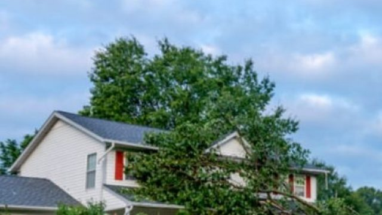

Tree Removal, Tree Trimming & Much More - That's What We Do.
Your # 1 Choice
Do You Need Tree Service In An Emergency Situation?

Emergency Tree Service Pocatello Idaho
Severe weather, lightning strikes, heavy winter ice accumulation, and high-desert windstorms can cause tree branches or entire trees to fail without warning. When a compromised tree falls on your home, blocks your driveway, or threatens local utility lines, you need a prompt and reliable partner. At Pocatello Tree Service, we provide 24/7 rapid mobilization emergency tree services throughout Pocatello, Chubbuck, and surrounding Bannock County.
Our mobile emergency response crew is fully equipped to handle high-hazard storm damage. We focus on stabilizing the situation first, using advanced rigging ropes, arborist blocks, crane-assisted lifting, and bucket trucks to dismantle fallen or leaning trees carefully. Our goal is to secure your property immediately, prevent any secondary damage, and safely clear the area so you can focus on returning to normal.
Emergency Tree Removal
Usually, with emergency tree removal services, time is of the essence. There will be two instances here most of the time, the first one is when the tree has already fallen and we want to make sure that it won’t be a liability or danger to anyone anymore or cause further property damage. The next one is when a tree is showing signs that it can be a danger to anyone or the surrounding property when it’s about to fall.
In cases like this, we really need to act fast and make sure that the tree is removed methodically that it won’t cause any harm to anything or anyone. It can be tricky, but we won’t back down at all to any challenge that comes our way.
Emergency Tree Trimming
Sometimes, we don’t really need to entirely remove a tree as it does not pose that much danger. But if a branch or a part of it is barely hanging on about to fall and harm anyone or anything then that’s the time that you call us for help.
We won’t really know when you’re going to need our assistance that’s why we’re always available 24/7. We also need to make sure that the tree won’t be damaged so it can still grow accordingly.
Also, it’s important to call us and trim those trees before severe weather conditions like storms, snow, or strong winds. You don’t want those tree branches flying and cause property damage or worse injure anyone.
Emergency Tree Stump Grinding And Removal
Tree stumps may not really pose the same levels of danger as opposed to fully-grown trees that are large enough to really wreck homes or cars parking outside. But if you need tree stump removal and grinding services pronto, then we’re here to help anytime.
Emergency Tree Cabling And Bracing
Our emergency tree services include preventative measures like cabling and bracing trees. Sometimes, we won’t have enough time to do so when severe weather or hurricane is en-route and this is bad news if you have a tree that’s visibly going to either be uprooted or have branches flailing and flying around. We don’t want that. Call us!
Emergency Residential And Commercial Tree Service
Need to secure your home and or commercial spaces ASAP? No worries, call us and we’ll be there in a jiffy to trim, remove, brace, or cable that tree right away. We will perform these services at a very reasonable rate even if it’s an emergency request.
Your safety is our priority.
Questions & Answers
A tree emergency includes fallen trees or limbs blocking driveways, trees resting on utility lines, split trunks threatening to collapse on structures, or storm-damaged branches hanging precariously over public walkways.
We offer 24/7 rapid mobilization for storm damage and tree emergencies in Pocatello and Chubbuck. Our crew typically dispatches immediately and arrives on-site within 1 to 2 hours of your call.
Most homeowners insurance policies cover emergency tree removal if a tree falls due to a storm or natural event and damages an insured structure (like a house or fence). We provide detailed digital documentation to help support your insurance claim.